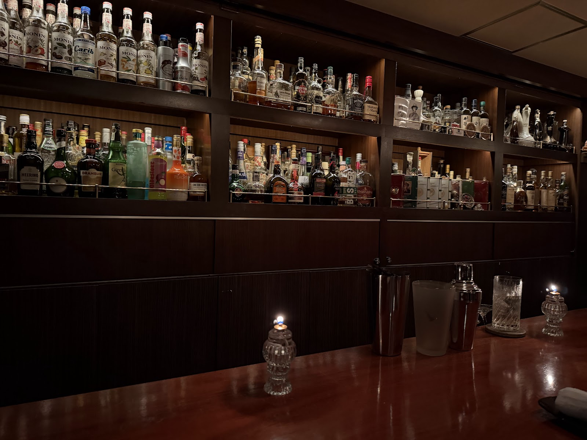
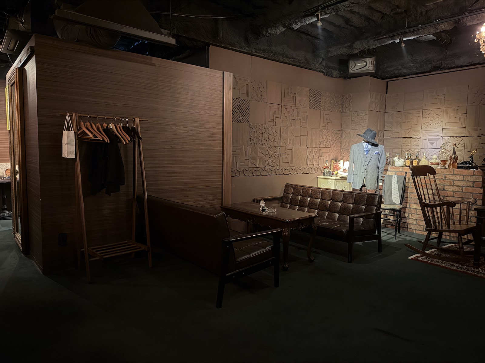
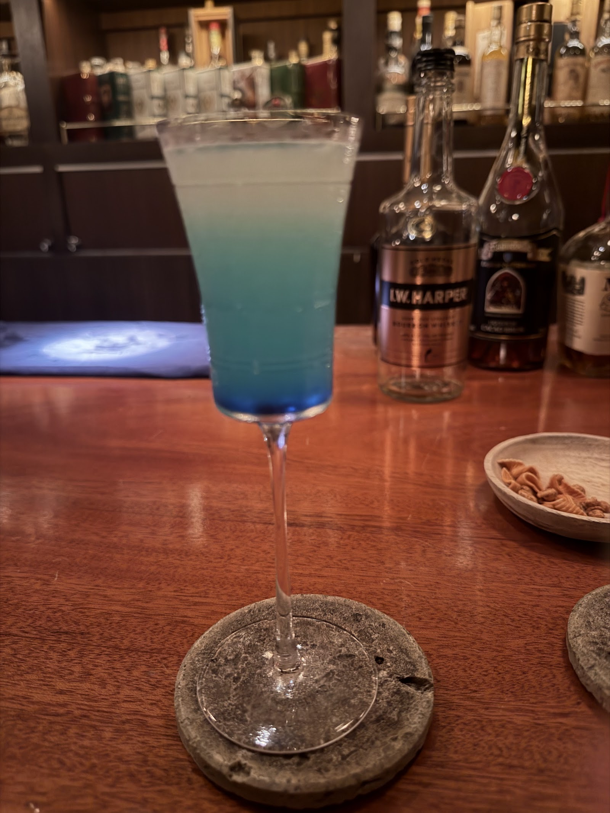
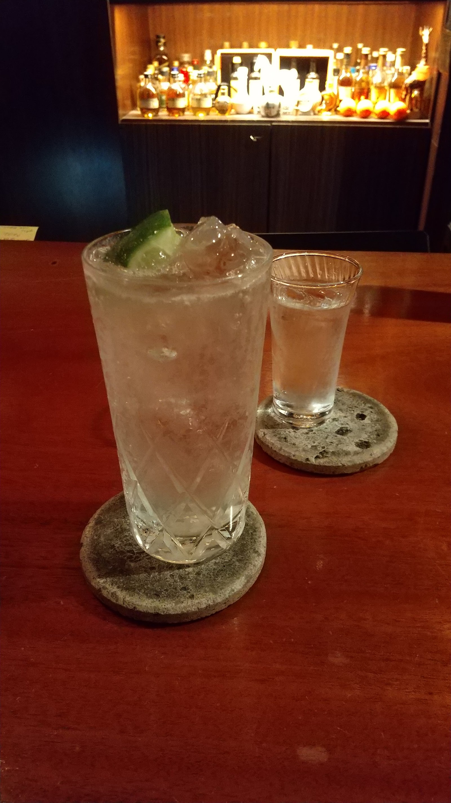

Authentic Bar / 柏
柏の夜に、静かな高みを。
喧騒を少し離れた場所に、落ち着いた時間だけが流れる空間があります。
グラスを傾けながら、会話も、ひとりの時間も、心地よく過ごしていただけます。
写真提供: Alpin(Googleマップ)
Rating
★★★★★ ★★★★★ 4.6 (30件のクチコミ)
Googleでは★4.6(30件のクチコミ)というご評価をいただいております。
Concept

落ち着いた内装と、心を配ったカウンター接客。オーセンティックバーとしての佇まいを大切に、一杯のお酒に向き合う時間をご用意しています。詳しいこだわりは、こちらのページでご紹介しています。
写真提供: K D(Googleマップ)
Gallery
店内の雰囲気を、写真でも感じていただけます。


写真提供: 加奈(Googleマップ)

写真提供: 田中正一郎(Googleマップ)
Access
柏駅からの道のりや店舗情報は、こちらからご確認いただけます。
〒277-0005 千葉県柏市柏4丁目4